auth
Basic認証 → SSO
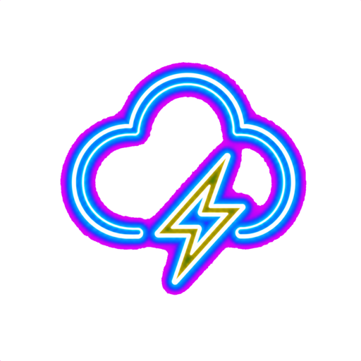
OSS・本物のクラウドで開く競技プラットフォーム
クラウドエンジニアの
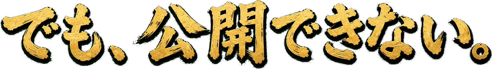
Basic認証 → SSO
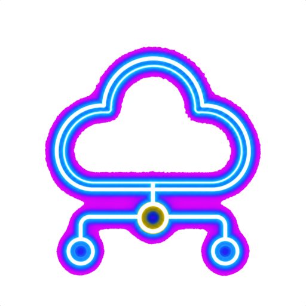
公開 S3 / 広い IAM → OAC
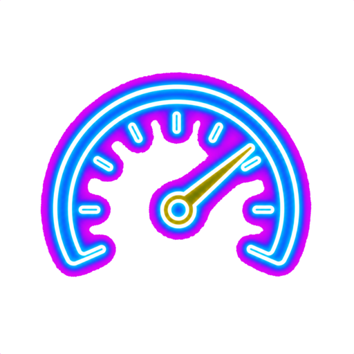
無制限 API → throttle
標準出力だけ → WORM
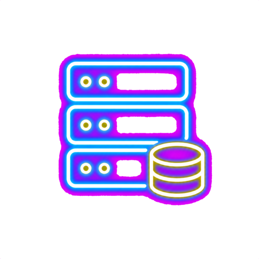
EC2 1 台 → Multi-AZ
ローカルでしか動かない AI 製アプリを、まず本物のクラウドで動かす。
公開範囲・権限・認証を直し、本番品質の守りを作る。
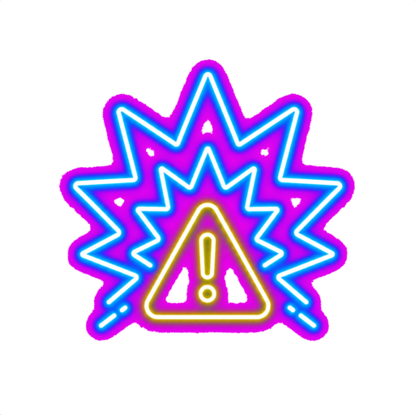
本番 DB の誤削除、サイト改ざん、攻撃を止めずに捌く。
稼働を守り切れたか、対応はどれだけ速かったか。順位が確定する。
問題を本物のクラウドへ展開
(AssumeRole + ExternalId)
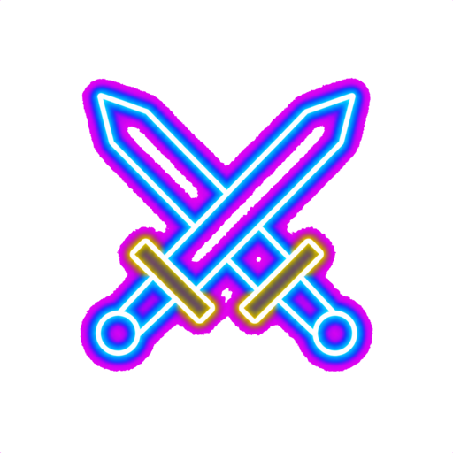
シナリオが障害・攻撃プローブを
自動で撃ち込む
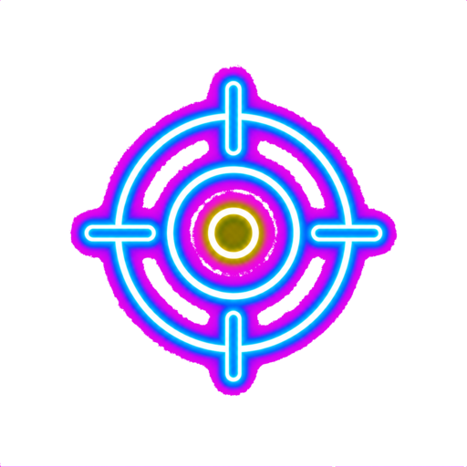
60 秒ごとに実状態を採点
(守れば加点 / 破られれば減点)
スコアを集計し、
順位をライブ更新
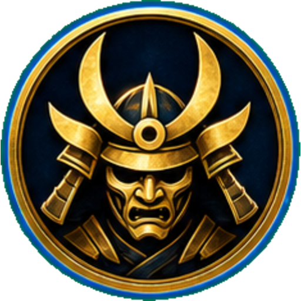
残り 00:11:58
天下一武道会を開くための
StackStack はその “第一試合”。
問題は OSS で誰でも作れて、同じ土台で競技をいくつでも開ける。
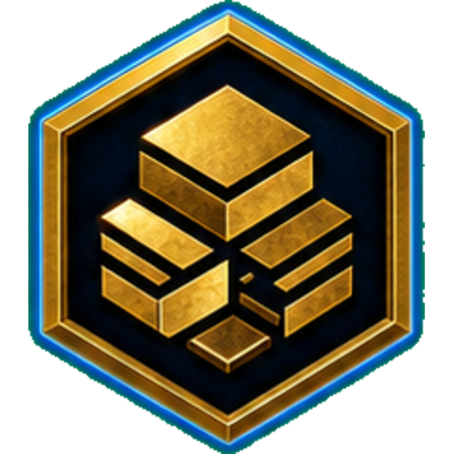
AI で作ったアプリを、安全な本番品質へ。
攻撃と障害から、サービスを守り抜く。
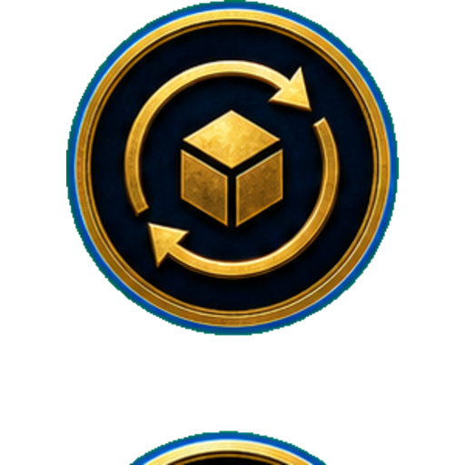
モノリスを、止めずに移行しきる。
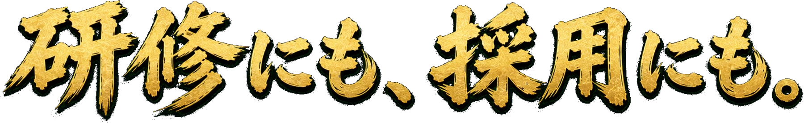
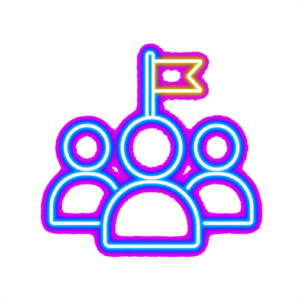
勉強会やコミュニティで、本物のクラウド競技を開催して盛り上げる。
チーム・組織で、安全な公開と運用力を継続的に鍛える。
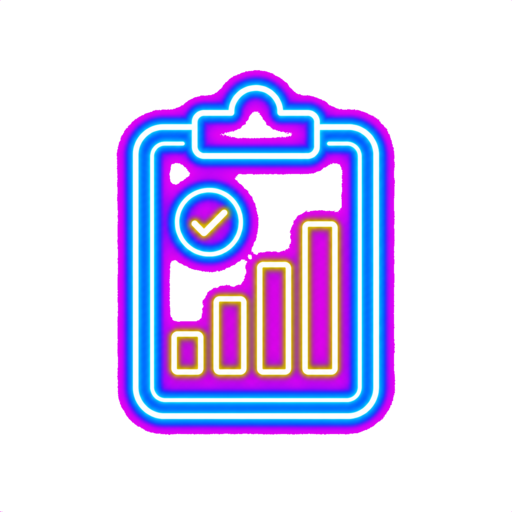
実状態で自動採点。採用評価や実力測定に使える客観指標になる。
(Susumu Tomita)
JAWS DAYS 2024
AWS Game Day 優勝。
2026 準優勝。
JAWS 名古屋運営メンバー。
Game Day の 熱量 を広げたい人。
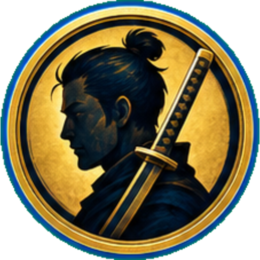
JAWS DAYS 2024
Game Day 優勝。
AWS 全認定 保有。
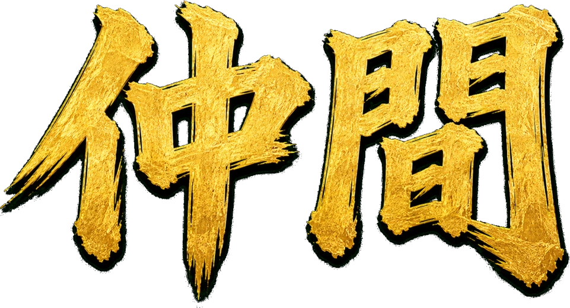
と、エフェクチュエーションの “クレイジーキルト” -
手を動かして TenkaCloud を一緒に育てる人を探しています。
AWS GameDay 等の競技が好きで、プラットフォームや問題を一緒に作れる人。
企業でクラウドの利活用やセキュリティ教育を進めている人。
1 ライセンス: いまは Apache 2.0。AGPL にすべき？
2 課金: 実クラウドを誰でも使えると費用が読めない。どう値付けする？
触ってみてください。問題も、コードも、すべて OSS。
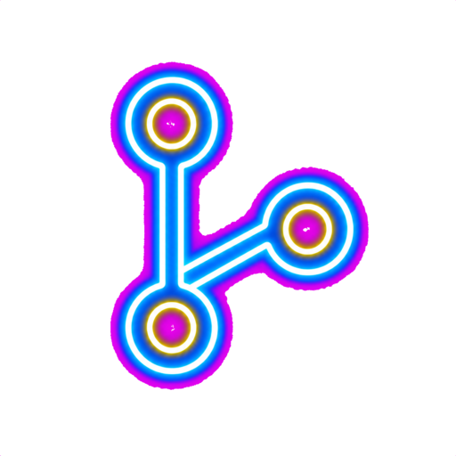
ソースコード・サンプルはこちらから。
本日出題した問題にチャレンジできます。
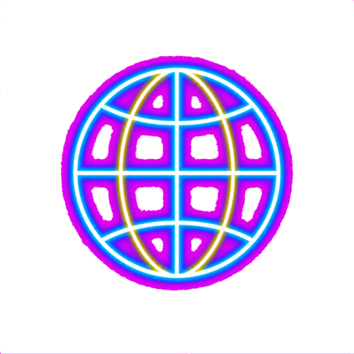
TenkaCloud の詳細・最新情報はこちら。
ともに、クラウドで天下をつかみましょう。